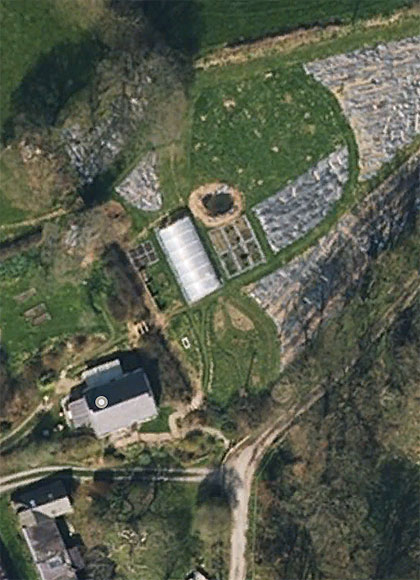

class: center, middle # Introduction 🌳 _Overview of ‘Create a Wildlife Forest Garden’<br>& the forest garden process_ [](/) by Jake Rayson [@ForestGdnWales](https://twitter.com/ForestGdnWales) [forestgarden.wales/wildlife-forest-garden/intro](https://www.forestgarden.wales/wildlife-forest-garden/intro/) ###### **Press `P` to see notes and credits**<br>This work is licensed under a [Creative Commons Attribution 4.0 International License](http://creativecommons.org/licenses/by/4.0/), embedded work may have other licenses. ??? * Quick intro, forest gardener & designer since 2015 * Creating a Forest Garden book * Everyone can garden * Tree sizes & position * Protection * Attention * It is a process that takes the rest of your life * Don’t worry about beauty, all wildlife gardens are beautiful --- class: middle, center  Transform your garden into a wildlife<br>habitat that provides edible crops --- class: middle, center [](https://www.nationalgeographic.com/video/shorts/1438178883749/) _“You don’t have to know everything to begin”_ ??? * [Martin Crawford](https://www.agroforestry.co.uk) on the #ForestGarden --- class: middle, center [](https://www.nationalgeographic.com/video/shorts/1438178883749/) But _where_ do you begin? --- # What we’ll learn * Structure of the course * What defines a forest garden * Elements of a forest garden  --- ## A. Course overview<br>B. Forest garden definition  --- # A. Overview 1. _Propagate_ 2. _Perennial veg_ 3. _Survey_ 4. _Design_ 5. Windbreaks 6. Canopy 7. Ground prep 8. Shrubs 9. Ground cover  ??? * Divided into 2 parts, the preparation (in italics) & the fieldwork * Propagation top, so as to get positive feedback * Perennial veg next, to reap a harvest --- # 1. Propagate  ###### <span style="text-decoration:underline;">Propagate</span> — Perennial veg — Survey — Design — Windbreaks — Canopy — Ground prep — Shrubs — Ground cover --- # 2. Perennial vegetables  ###### Propagate — <span style="text-decoration:underline;">Perennial veg</span> — Survey — Design — Windbreaks — Canopy — Ground prep — Shrubs — Ground cover --- # 3. Survey  ###### Propagate — Perennial veg — <span style="text-decoration:underline;">Survey</span> — Design — Windbreaks — Canopy — Ground prep — Shrubs — Ground cover --- # 4. Design  ###### Propagate — Perennial veg — Survey — <span style="text-decoration:underline;">Design</span> — Windbreaks — Canopy — Ground prep — Shrubs — Ground cover --- # 5. Windbreaks  ###### Propagate — Perennial veg — Survey — Design — <span style="text-decoration:underline;">Windbreaks</span> — Canopy — Ground prep — Shrubs — Ground cover --- # 6. Canopy  ###### Propagate — Perennial veg — Survey — Design — Windbreaks — <span style="text-decoration:underline;">Canopy</span> — Ground prep — Shrubs — Ground cover --- # 7. Ground preparation  ###### Propagate — Perennial veg — Survey — Design — Windbreaks — Canopy — <span style="text-decoration:underline;">Ground prep</span> — Shrubs — Ground cover --- # 8. Shrubs  ###### Propagate — Perennial veg — Survey — Design — Windbreaks — Canopy — Ground prep — <span style="text-decoration:underline;">Shrubs</span> — Ground cover --- # 9. Ground cover  ###### Propagate — Perennial veg — Survey — Design — Windbreaks — Canopy — Ground prep — Shrubs — <span style="text-decoration:underline;">Ground cover</span> --- # B. Forest garden 1. Why a forest garden? 2. What is a forest garden? 3. Detailed definition  ??? * How to choose plants for your garden * _Context_ is central * [Creating a Forest Garden](https://www.agroforestry.co.uk/product/creating-a-forest-garden-2/): buy this book --- # 1. Why a forest garden? * Sustainable, wildlife-friendly gardening * Connects food, wildlife & landscape * Climate Emergency * Mass Extinction  ??? * We have to change * Climate Emergency - [1.5°C by 2026](https://climatenewsnetwork.net/warming-exceed-1-5c-limit-2026/) * [State of Nature report 2019](https://www.bto.org/our-science/publications/state-nature-report/state-nature-report-2019) states [15% species under threat of extinction in UK](https://www.bto.org/sites/default/files/publications/state-of-nature-2019-summary-report-uk.pdf) --- # 2. What is a forest garden? ### Multi-layered perennials,<br>emulating edge of woodland,<br>working with nature to grow edible crops ### Imagine a well-protected fruit and nut orchard, underplanted with fruit bushes<br>& herbaceous perennial vegetables,<br>with a living ground cover<br>& plants providing nutrients --- # 3. Forest garden definition  1. **Productive**: grow edible crops 2. **Sustainable**: working with nature 3. **Low-maintenance**: closed perennial system ??? * Any-sized garden --- ## 1. Productive  ##### <span style="text-decoration:underline;">Productive</span> — Sustainable — Low-maintenance * Edible crops: fruit, nuts, veg, herbs * Other crops: dyes, canes, poles, string, firewood… * Multi-layered, using all available space in [4 dimensions](https://www.forestgarden.wales/blog/seven-layers-forest-garden/). --- ## 2. Sustainable  ##### Productive — <span style="text-decoration:underline;">Sustainable</span> — Low-maintenance * Supplies nutrients whilst capturing carbon * Wildlife predators keep pests in check * Permanent “living mulch” ground cover ??? * Nutrients: mineral accumulators, nitrogen fixing plants, human wee * Carbon: trees, perennials & soil biota sequester carbon * Predators: need functioning ecosystem. Plant strength & diversity increases biodiversity (habitats, food). Importance of native. * Living mulch: reduces weeding --- ## 3. Low maintenance  ##### Productive — Sustainable — <span style="text-decoration:underline;">Low-maintenance</span> * Resilient, no watering * Minimal weeding, no digging * No fertilisers, zero compost ??? * Resilient: can withstand greater climate fluctuations, all water on-site * Minimal weeding: permanent living ground cover * No digging: mostly perennials with some self-seeding annuals * No fertilisers: fertility from mineral accumulators and nitrogen fixers, with compost in-situ --- # Forest garden takeaway 1. Tree spacing 2. Windbreaks 3. Time  ??? A forest garden is an on-going spiralling process! --- class: middle, center # The End --- # Appendix: reference * [Martin Crawford](https://www.agroforestry.co.uk/): books, courses, plants * [National Geographic short](https://www.youtube.com/watch?v=Q_m_0UPOzuI) of Martin Crawford’s garden * [A New Garden Ethic](https://newsociety.com/Books/N/A-New-Garden-Ethic) by [Benjamin Vogt](https://www.monarchgard.com/benjamin-vogt.html) * [Database of Insects & Food Plants](https://www.brc.ac.uk/dbif/homepage.aspx) * [Plants for a Future](http://www.pfaf.org/): massive database of useful plants * [RHS Plant Finder](https://www.rhs.org.uk/Plants/Search-Form) with native filter * [Orange Pippin](https://www.orangepippin.com/apples): super fruit tree reference [](https://www.agroforestry.co.uk/product/creating-a-forest-garden-2/)